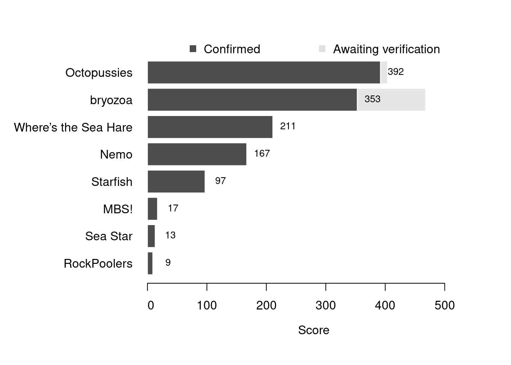

Content
You can view all the wildlife recorded at this event on iNaturalist.


| Records | 79 |
| Species | 45 |
| Verified species | 42 |
| Observers | 8 |
| Potential score | 1,061 |
| Confirmed score | 937 |
| Top verified species | Manzonia crassa |
| Top species rarity score | 200 |
| Registered participants | 23 |
| Children attending | 15 |
Congratulations to Octopussies for taking the gold medal in this BioBlitz Battle! And well done to everyone for a great game and some fantastic wildlife finds.
| Team | Records | Potential Score | Confirmed Score |
|---|---|---|---|
| Octopussies | 39 | 404 | 392 |
| bryozoa | 8 | 468 | 353 |
| Where’s the Sea Hare | 19 | 211 | 211 |
| Nemo | 10 | 167 | 167 |
| Starfish | 6 | 97 | 97 |
| MBS! | 1 | 17 | 17 |
| Sea Star | 1 | 13 | 13 |
| RockPoolers | 1 | 9 | 9 |

| Participant | Records | Potential Score | Confirmed Score |
|---|---|---|---|
| David Lyu | 8 | 468 | 353 |
| pachygrapsis | 31 | 328 | 316 |
| E.B | 19 | 211 | 211 |
| Naomi | 10 | 167 | 167 |
| Kamil Majewski | 6 | 97 | 97 |
| Joseph Martin | 8 | 85 | 85 |
| free_snacks | 1 | 17 | 17 |
| nellis1 | 1 | 13 | 13 |
| nathanf23 | 1 | 9 | 9 |
A total of 5 species have a verified rarity score of 43 or higher.


Community verified records only
Click any image to view the taxon on iNaturalist.
| Name | Rarity Score | |
|---|---|---|

|
Manzonia crassa | 200 |

|
Depilatory Seahare - Aplysia depilans | 69 |

|
Amblyosyllis spectabilis | 55 |

|
Oscarella nicolae | 44 |

|
Flustrellidra hispida | 43 |

|
Sulphur Boring Sponge - Cliona celata | 29 |

|
Keyhole Bryozoan - Cryptosula pallasiana | 28 |

|
Aeolidiella alderi | 27 |

|
Sea Gherkin - Pawsonia saxicola | 24 |

|
Anomia ephippium - Anomioidea | 21 |

|
Devonshire Cup Coral - Caryophyllia smithii | 21 |

|
Black Squat Lobster - Galathea squamifera | 18 |

|
Clingfishes - Gobiesocidae | 18 |

|
Pink Plate Weeds - Lithophyllum incrustans | 18 |

|
Perforated Barnacle - Perforatus perforatus | 18 |

|
Pink Coryphella - Edmundsella pedata | 17 |

|
Colonial Seasquirt - Polyclinidae | 17 |

|
Five-bearded Rockling - Ciliata mustela | 16 |

|
Long-clawed Porcelain Crab - Pisidia longicornis | 16 |

|
Spiral Fanworms - Spirorbis | 16 |

|
European Sting Winkle - Ocenebra erinaceus | 15 |

|
Dwarf Brittle Star - Amphipholis squamata | 13 |

|
Worm Pipefish - Nerophis lumbriciformis | 13 |

|
Netted Dogwhelk - Tritia reticulata | 13 |

|
Flat Periwinkle - Littorina obtusata | 12 |

|
Christmas Tree Worms - Spirobranchus | 12 |

|
Thongweed - Himanthalia elongata | 11 |

|
Rockpool Prawn - Palaemon elegans | 11 |

|
Strawberry Anemone - Actinia fragacea | 10 |

|
Grey Mail-shell - Lepidochitona cinerea | 10 |

|
Hairy Porcelain Crab - Porcellana platycheles | 10 |

|
Cushion Star - Asterina gibbosa | 9 |

|
Common Coralline - Corallina officinalis | 9 |

|
Velvet Swimming Crab - Necora puber | 9 |

|
Common Hermit Crab - Pagurus bernhardus | 9 |

|
Montagu’s Crab - Xantho hydrophilus | 9 |

|
Atlantic Beadlet Anemone - Actinia equina | 8 |

|
Edible Crab - Cancer pagurus | 8 |

|
Shanny - Lipophrys pholis | 8 |

|
Common Periwinkle - Littorina littorea | 8 |

|
Atlantic Dogwhelk - Nucella lapillus | 8 |

|
European Green Crab - Carcinus maenas | 7 |